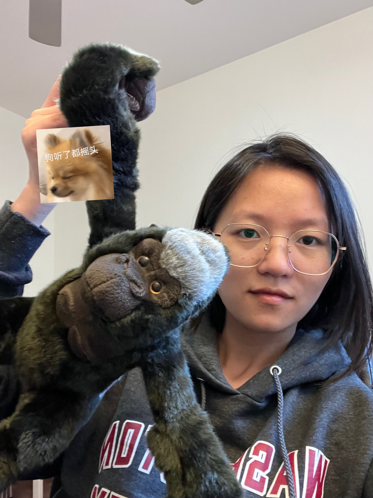

Bioinformatics
She/Her
Based in Saint Louis, U.S.
Email: 1995aileen@gmail.com
Skills
Python
PyTorch
scikit-learn
Scanpy
tidyverse
Docker
Bash
Git
English
Chinese

Hello! I’m Ling Liao, a passionate bioinformatician with a focus on computational biology and data-driven insights. I enjoy turning complex biological data into meaningful visualizations and predictions.
My expertise spans multiple programming languages and bioinformatics tools, including Python, R, and PyTorch. I have experience in single-cell analysis, genomic studies, and machine learning applications in biology.
I am committed to advancing scientific research through rigorous data analysis, reproducible workflows, and collaborative projects. I am always eager to connect with fellow researchers and contribute to open science initiatives.